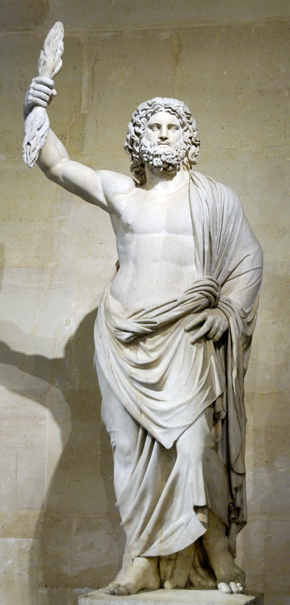

The Big Three
Welcome to my website about the 3 Major Greek Gods
Zeus
The God of lightning

Zeus was the king of the gods, and the most powerful. He was the god of the sky and thunder, and controlled the weather. He had different powers, his most famous being the ability to hurl lightning bolts at those who displeased him! He hated dishonesty, and would punish those who lied or broke promises.
Poisedon
The God of water

Poseidon was the brother of Zeus, and god of the sea and earthquakes. Although one of the gods of Mount Olympus, he spent most of his time in the ocean. His weapon was a trident which was said to be so powerful it could shake the earth and shatter any object! He had a reputation for being bad-tempered and moody, and would seek revenge on those who angered him.
Hades
The God of the Underworld

Hades was Zeus and Poseidon’s elder brother. Although a god of Mount of Olympus, Hades rarely left his dark kingdom, the underworld, where he ruled over the dead. Because he represented death, Hades was the most feared of the Ancient Greek gods – some people even refused to say his name! Hades was aided in the underworld by his three headed dog, Cerberus.
| Zeus | Poseidon | Hera | Demeter | Athena | Apollo | Artemis | Ares | Hepaestus | Aphrodite | Hermes | Dionysus |
| God of the sky | God of the sea | Goddess of marriage | Goddess of agriculture | Goddess of wisdom | God of the sun, music, and poetry | Goddess of the hunt | God of war | God of fire | Goddess of love | Messanger God | God of wine |
Copright ©2022 Dan Nguyen